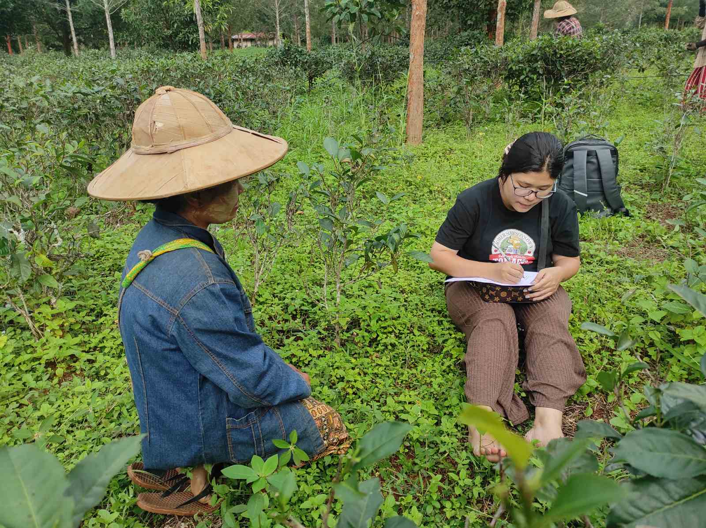

Tender Shoots Research Group works with families in Myanmar, particularly parents and caregivers whose children face barriers to educational and career success. Our programs are designed to support families that may have limited access to guidance, resources, professional networks, or educational planning opportunities. We also prioritize the inclusion of vulnerable and underserved populations to ensure that opportunity is accessible to all.
Tender Shoots empowers parents to become effective advocates and mentors for their children's futures. Rather than focusing solely on students, we work with the entire family ecosystem through community research, educational resources, training workshops, and stakeholder engagement. By strengthening parental knowledge and confidence, we help create sustainable pathways toward education, employment, and social mobility.
Our current initiatives are based in Taunggyi District, Southern Shan State, and Hpa-An, Kayin State, Myanmar. We collaborate directly with local families, educators, community leaders, and stakeholders to ensure that our programs reflect community realities and locally identified needs.
Tender Shoots focuses on critical decision-making periods in a young person's life, particularly when families are navigating educational transitions, career planning, and future opportunities. By providing support before opportunities are missed, we help families make informed decisions that can influence long-term outcomes.
Our approach begins with listening to communities. Through surveys, interviews, focus groups, and community consultations, we identify barriers experienced by families and transform those findings into practical educational tools and training programs. We believe empowered parents become multipliers of impact, creating positive change not only for their own children but also for their wider communities. This community-centered model helps ensure that benefits continue long after a specific project concludes.
Contact Khine at tsmyanmar [at] i-edi.org; for all funding and quality-reports of this project, contact iedi.generations [at] gmail.com